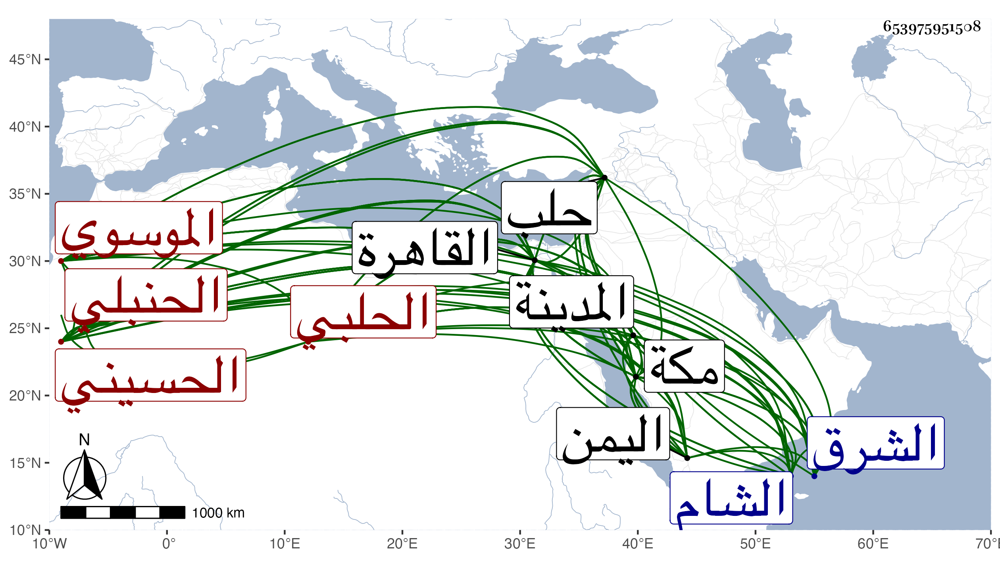

0902Sakhawi.DawLamic.ITO20230111-ara1.EIS1600.653975951508
Biography ID: 653975951508
413
محمد بن محمد بن علي بن هاشم بن منصور رضي الدين أبو بكر بن الظهير الحسيني الموسوي الحلبي الحنبلي ويعرف كأبيه بابن منصور . قدم أبوه لحلب من الشرق وتصرف فيها بالرسلية بأبواب القضاة ونحوها وولد له ابنه بها في عاشر صفر سنة ثلاث وستين وثمانمائة ونشأ بها فاشتغل ... وطلب الحديث وأخذ عن أبي ذر والبقاعي والخيضري ولازمه سيما بالقاهرة وتردد لمن تجدد من المسمعين ... كالبهاء المشهدي والكمال بن أبي شريف والسنباطي والديمي بل قرأ على أبي السعود الغراقي وعلى حفيد يوسف العجمي وعبد الغني بن البساطي وابن الشهاب البوصيري وغيرهم ممن سمع على ابن الكويك والطبقة ولا زال يسترسل حتى أخذ عن الأمين بن الحكاك المنصوري أحد نواب الحنابلة فمن دونه ، وكان قدومه القاهرة في سنة سبع وثمانين ثم بعدها ولما قدمت من مكة تردد إلي وقرا علي من مروياتي ومصنفاتي وكتب بخطه بعضها واستفاد مني تراجم وقال أنه يريد جمع شيوخه ، وهو ذكي فهم سريع الكتابة والهذرمة في القراءة فيه قابلية وفطنة ولكنه متجاهر غير متصون وقد كف قليلا وساعده الخيضري حتى استقر في كتابة سر حلب ونظر جيشها في أثناء سنة تسعين ببذل قيل نحو ألفين ثم في قضاء الحنابلة بها ثم صرف عن ذلك بعد إهانة شديدة ووضع في الحديد ، وقدم القاهرة في أثناء سنة خمس وتسعين فقرأ علي أشياء وحصل وجيز الكلام في الذيل على دول الإسلام وغيره من تصانيفي وتزايد نفوري منه لعدم ثقته وديانته ، وذكر لي أنه قرأ في الشام على جماعة من أصحاب عائشة ابنة ابن عبد الهادي وغيرها بالسماع ثم سافر لمكة وتوجه منها إلى المدينة وصحب بعض الرافضة بها بل رام التزوج فيهم فكفه السيد السمهودي وكان يجمع عليه ، ثم رجع إلى مكة وسافر منها إلى اليمن وانقطع خبره عنا .
